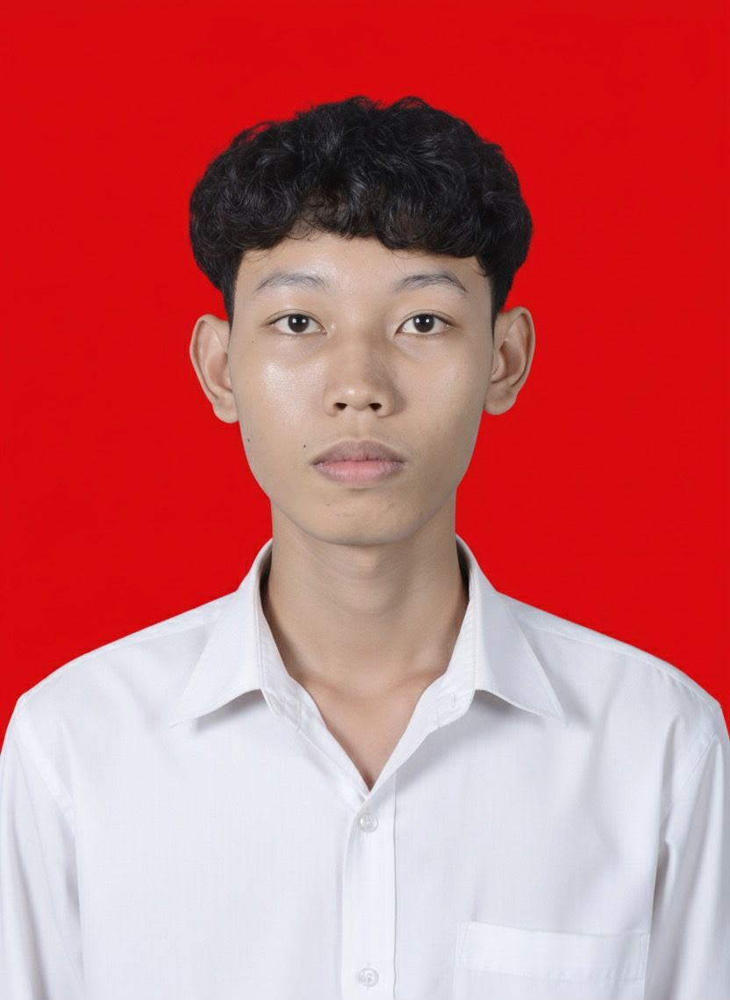

Lulusan D3 RMIK Universitas Esa Unggul. Jago ngubek-ngubek berkas rekam medis, kodefikasi ICD, audit data kesehatan, sampai analisis spasial pakai QGIS. Detail-oriented, kolaboratif, dan totally trustworthy soal kerahasiaan data pasien 🔒💾
Lulusan D3 Rekam Medis dan Informasi Kesehatan Universitas Esa Unggul dengan pengalaman praktik kerja lapangan di berbagai fasilitas kesehatan, mulai dari rumah sakit besar sampai puskesmas. Punya kemampuan mengelola rekam medis manual maupun elektronik, melakukan pengkodean penyakit dan tindakan berdasarkan ICD-10 & ICD-9-CM, serta audit dan analisis data kesehatan.
Terbiasa pakai Sistem Informasi Rumah Sakit (SIRS), RME/RKE, serta aplikasi pendukung seperti QGIS dan Microsoft Office. Adaptif, kolaboratif, dan berkomitmen tinggi menjaga kualitas serta kerahasiaan data kesehatan pasien.
Analisis & pengolahan data statistik kesehatan, audit kelengkapan rekam medis, kodefikasi ICD-10 & ICD-9-CM, RME, serta pemahaman proses pendaftaran pasien rumah sakit.
Familiar dengan tools sehari-hari di unit rekam medis dan analisis spasial untuk pemetaan kebutuhan layanan kesehatan.
Kolaborator tim yang solid, adaptif terhadap perubahan mendadak, manajemen waktu rapi, problem solver dengan pendekatan akar masalah, jujur dan tanggung jawab tinggi.
D3 Rekam Medis dan Informasi Kesehatan, Semester 6
Pendidikan Menengah Atas